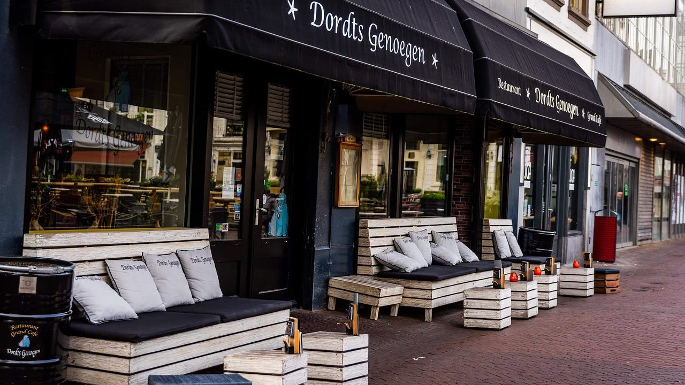

De reden dat ik voor Software Developer heb gekozen is omdat ik iets wilde doen met ICT en omdat het mij leuk lijkt om dingen te programmeren
Mijn droom is dat ik werk voor een groot bedrijf die software maakt en misschien mensen helpt met problemen met hun devices
Op dit moment werk ik in de Horeca, de vaardigheden die je zeker nodig hebt is communicatie en samenwerking
Deze vaardigheden heb je ook nodig voor Software Developer en ik denk dat ik het goed beheer
De talen die ik op dit moment beheers:
Mijn Hobby's zijn: